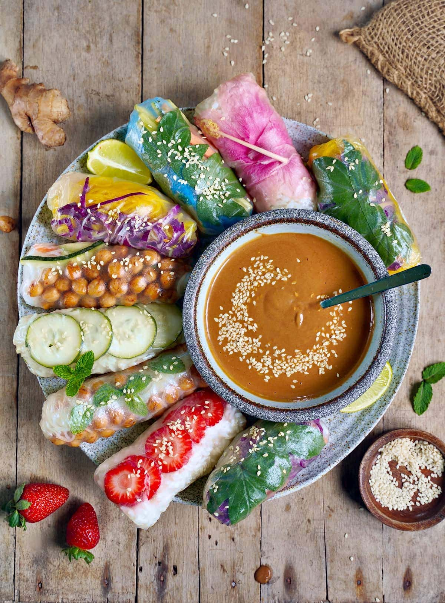

Vegan Spring Rolls

Ingredients
- Rice Paper Wraps
- Cucumber
- Carrots
- Rice Noodles
- Mushrooms
- Tofo
- Avocado
Ingredients for the peanut sauce
- Hot water
- Hoisin Sauce
- Peanut Butter
Steps
- Chop the vegetables and tofo thinly
- Cook the noodles and place to the side
- Boil some hot water and place some aside in a bowl
- Mix the peanut butter, hoisin sauce and hot water to make the peanut sauce
- Dip the rice paper wraps in the hot water then lay down on a flat surface
- Place the vegetable, tofo and rice noodles in the wrap
- Wrap everything up and then place aside with the peanut sauce